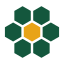
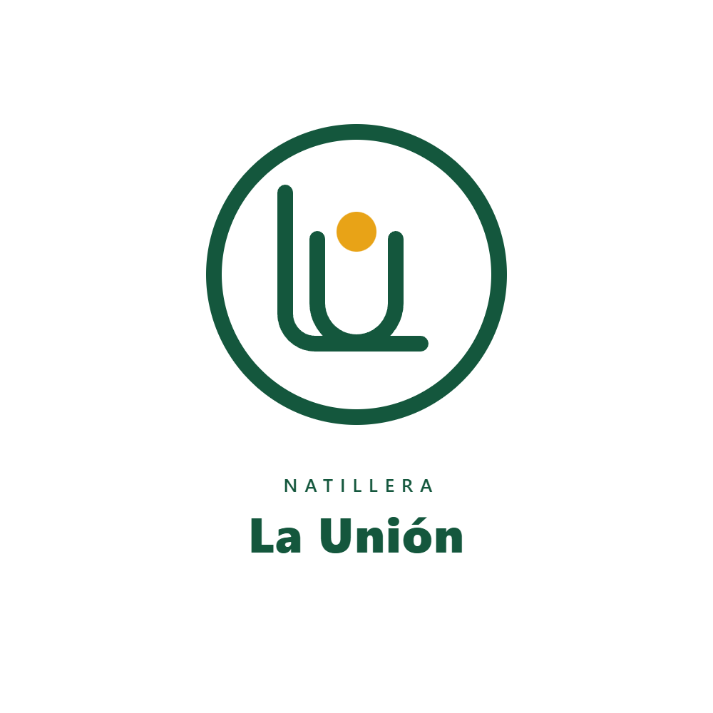
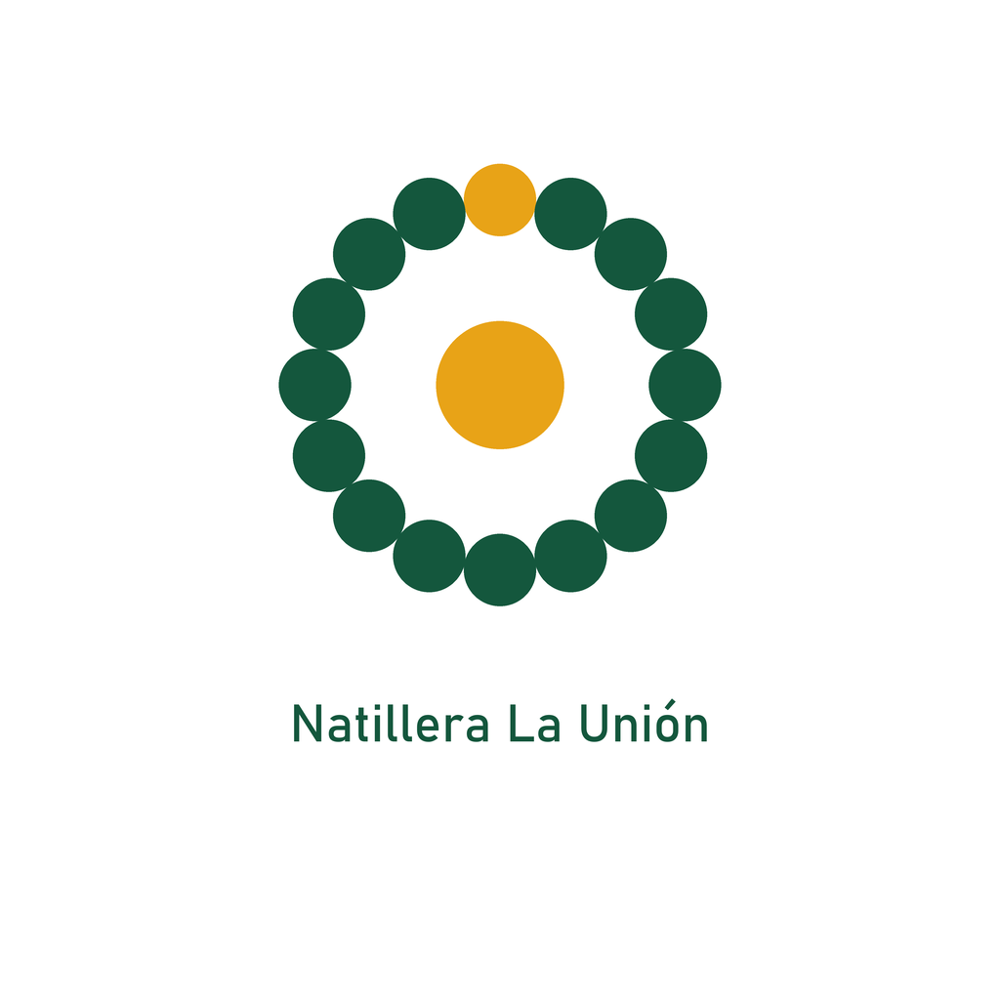
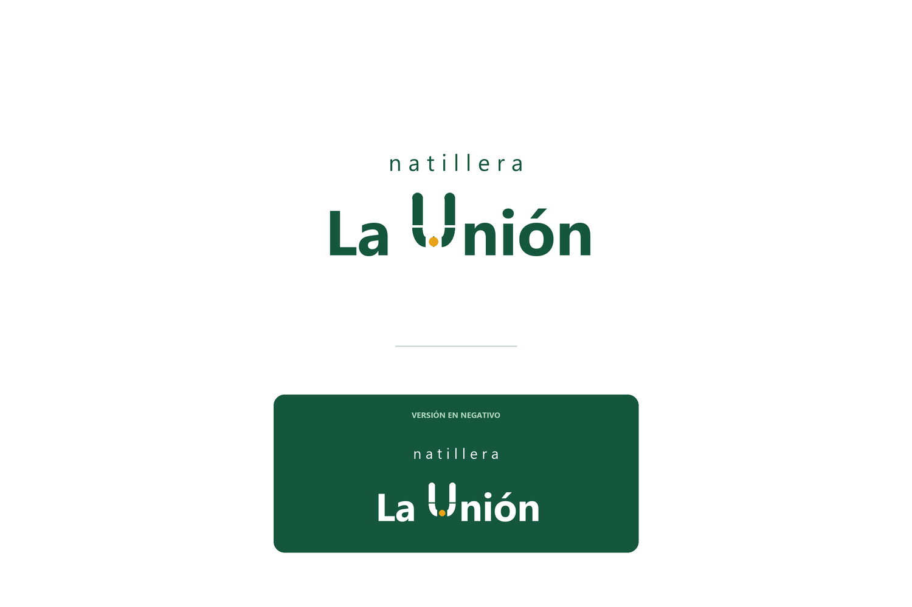
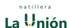

Propuestas de logo · Natillera La Unión 2027
Verde pino #14573D y dorado caléndula #E8A317 sobre blanco. Seis propuestas: tres hechas en este proyecto (A1 a A3) y tres generadas con Gemini (G1 a G3). Abajo están comparadas a tamaño pequeño.
Propuestas A · hechas en el proyecto
A1 · Brote
Una moneda que deja crecer un brote: el ahorro de todos, cuidado turno a turno, se vuelve crecimiento.
simbolo · horizontal · una tinta · negativo


A2 · Colmena
Siete celdas ordenadas trabajando juntas; la celda dorada es la persona del turno. Comunidad que se turna.

simbolo · horizontal · una tinta · negativo


A3 · Anillo del turno
La "i" dentro de una ronda abierta que sigue girando; el punto es la moneda del turno.
simbolo · horizontal · una tinta · negativo


Propuestas G · generadas con Gemini
G1 · Monograma LU
La "L" y la "U" entrelazadas dentro de un círculo; la "U" acoge una moneda dorada. Nombre: "Natillera La Unión".



G2 · Cadena de socios
Un anillo de círculos que se tocan, uno por socio, alrededor de una moneda dorada. El círculo dorado de arriba es el turno que recibe.



G3 · Logotipo tipográfico
"natillera" en pequeño y "La Unión" en grande. La "U" se cierra con un punto dorado en el punto de unión. Incluye la versión en negativo.


Tamaño real a 120 px de ancho

Comparación a 32 px
Así se verían como icono de la pestaña o del teléfono. El logotipo G3 es un nombre y no un símbolo: va a su ancho real de 120 px.